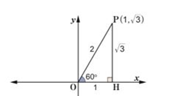
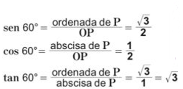
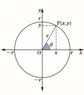

Al dibujar el triángulo rectángulo POH en el primer cuadrante del plano cartesiano, considerando el vértice O como el origen, se tiene la siguiente figura:
De donde, OH=1 y PH= √3. Por tanto, las coordenadas de P son (1, √3). Como sen60°=√3/2, cos 60°=1/2 y tan60° = √3/1 se establecen las siguientes relaciones:
 En general, dado un ángulo cualquiera θ y su lado terminal OP,con OP =r, el punto P con coordenadas (x, y) o simplemente P(x,y) será el punto de intersección de la circunferencia de radio r y el lado terminal de θ. En este caso, los valores de seno, coseno y tangente del ángulo θ, se definen como:
senθ = y/r , cosθ= x/r y tanθ = y/x.
Nótese que estos valores están definidos por las coordenadas del punto P y el radio r . Además, no importando el valor que tome r, estos valores se determinan en función de e, es por eso que se denominan funciones trigonométricas del ángulo θ.
Ejercicios
Trace el lado terminal OP para el ángulo e y exprese los valores de sen e, cos 0 y tan e considerando:
- a) P(√3,1) y r = 2
- b) P(-1,1) y r = √2
- c) P(-1,√3) y r = 2